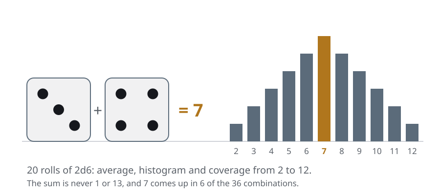
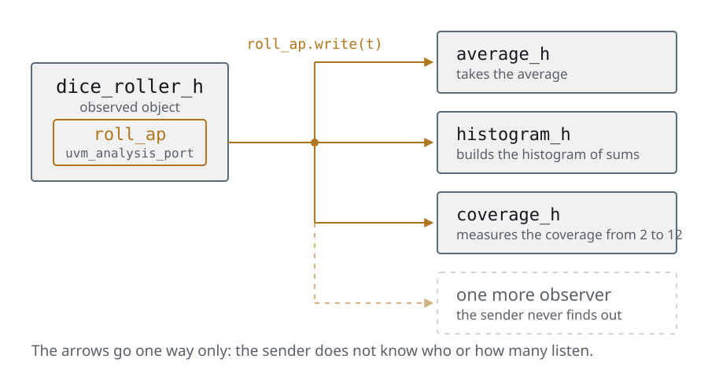
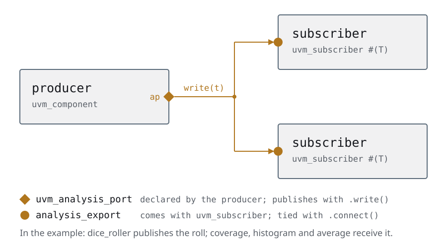
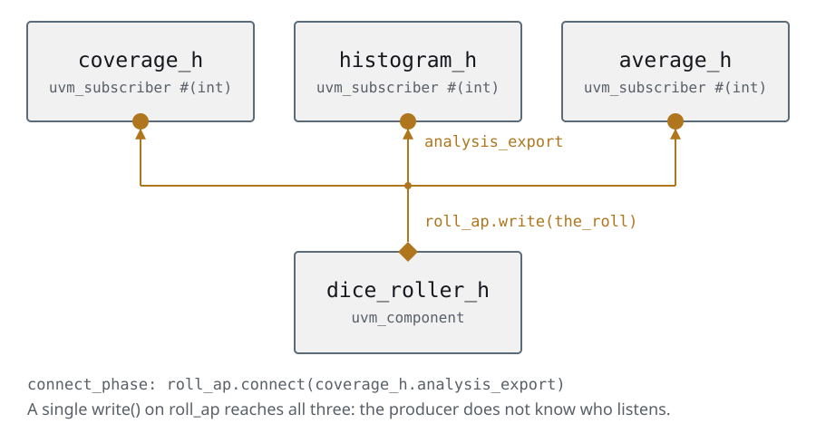
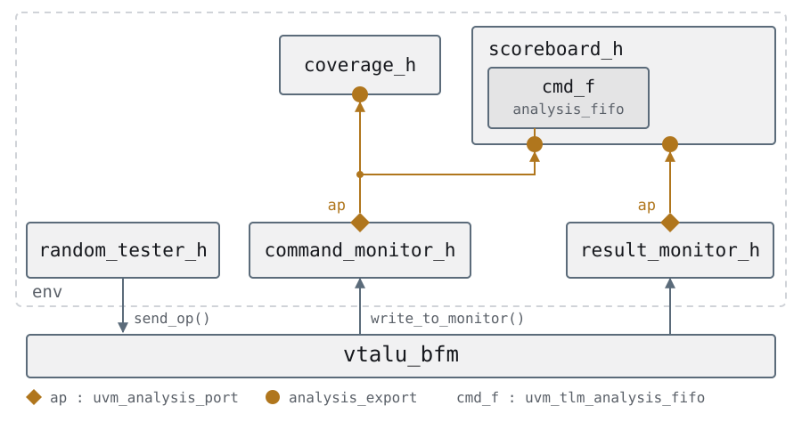
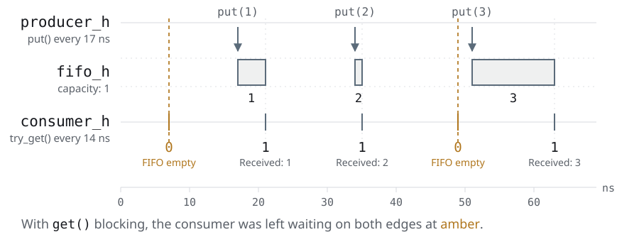
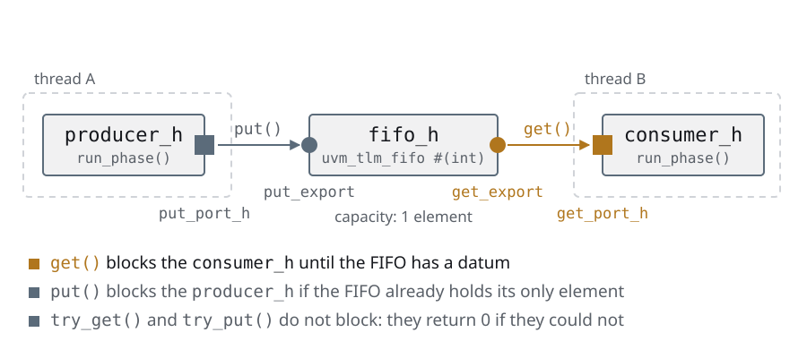
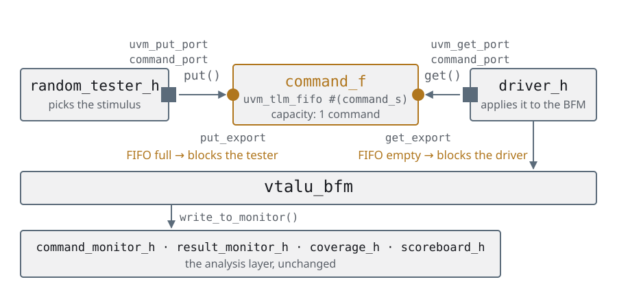

Day 4How the components talk
The same slides as the deck, with the instructor notes inside the text and the complete code. If you are taking the course on your own, start here and keep the deck alongside for the reviews.
Agenda
Day 4 · ≈ 4 h · unit 5 · how the components talk
- One producer, many listeners
- A single place that watches the wire
- When somebody has to wait
- Who waits for whom
One producer, many listeners
Two ways of talking between objects
- The structural paradigm asks which steps to follow. OOP asks what objects
there are and how they talk to each other — and that is where the
single-
initialtestbench ends - And talking, between objects, is exactly two things. The difference is whether the two run in the same thread or not
- Same thread: one calls the other's method and comes straight back. It is
the
write()of auvm_analysis_port— the first two sections of the day - Different threads: the two run at the same time and they have to be
coordinated, which means somebody is going to have to wait. It is
put/getand the TLM FIFOs — the last two - The whole of day 4 is those two columns. We start with the left-hand one
This slide is the map of the day: the four sections that follow are the two
columns below, in order.
It is worth writing the two columns on the board and coming back to them every
time a new port shows up, because the question to ask yourself in front of any
UVM port is always the same: can this block? If it runs in my thread, no; if
it runs in another one, yes, and then it has to be a task.
That is also the criterion that orders the vocabulary of the day: write() is a
function —it consumes no time—, put() and get() are task. The signature
tells you which side of the divide you are on before you read a line of the
implementation.
One producer, many listeners
The one who publishes does not know who reads it
- A piece of testbench data almost never has one addressee: every command the monitor sees is wanted by the scoreboard, the coverage and, tomorrow, the log
- The obvious solution is for the producer to keep a handle to every consumer and call their method. It works, and adding a consumer forces you to touch the producer
- It is the same problem the BFM solved in interfaces and BFM, one level up: there we hid the wire, here we want to hide the list of addressees
- The answer is an old pattern: the producer publishes on a port and does not know —nor care— who is on the other side
- The section builds it by hand with dice first, and only then replaces it with
uvm_analysis_port. The example is deliberately foreign to hardware
The dice example is deliberate and it is worth defending if somebody asks why we
do not start with the VTALU: you see the pattern without the noise of the
protocol. When it shows up on the DUT in the analysis ports, the student is no
longer learning two things at once.
The question that orders the section: which is the only line that has to be
written to add a fourth observer? A connect(). None in the producer. That is
the criterion to look at every line of code from here on with.
And it is worth anticipating the limit, because it is inter-thread communication:
this is communication inside a single thread. write() is a function, it
consumes no time, and it runs in the thread of the one publishing. To talk
between threads something else is needed.
One producer, many listeners
The problem: two dice, three things to count
- Write a program that simulates rolling two dice (2d6) 20 times and reports the following
- The average of the values the dice gave
- A histogram with the frequency of values
- A coverage report that shows whether every possible value from 2 to 12 came up

It is worth posing it as a programming problem before showing a single line: they are three consumers of the same piece of data, and each one does something different with it. Nobody thinks about hardware here, which is exactly the idea. The three reports have something in common that is worth pointing out now: none of them can be worked out from a single roll. The three accumulate and only report at the end, and that is why the three are going to need two methods, not one. And a quick question for the classroom, one that gets collected later: if tomorrow they ask for a fourth report —the most repeated roll, say—, which files have to be touched?
One producer, many listeners
The three observers: the same shape, three bodies
code/u5/varios-objetos/01-sin-analysis-port/average.svhclass average extends uvm_component;
`uvm_component_utils(average);
protected real dice_total;
protected real count;
function new(string name, uvm_component parent = null);
super.new(name, parent);
dice_total = 0.0;
count = 0.0;
endfunction : new
function void write(int t);
dice_total = dice_total + t;
count++;
endfunction : write
function void report_phase(uvm_phase phase);
`uvm_info("AVERAGE", $sformatf("DICE AVERAGE: %2.1f", dice_total / count), UVM_NONE)
endfunction : report_phase
endclass : averageaverageis the simplest one: awrite(int t)that accumulates, and areport_phase()that divides and reports at the end- That is the shape the three of them are going to have: they receive one roll at a time, and the result only exists once everything is over
It is worth showing the whole class only once —this one— and after that only the
write()s, because what matters is that the shape repeats.
Two details that get collected later: the report_phase runs when the last
objection drops, not at the end of the run_phase, and that is why the average
comes out complete. And dice_total and count are protected: the one
publishing cannot touch them, only call write().
When this is the VTALU, in the analysis ports, average is going to be the
scoreboard and the report_phase the verdict of the run. Same shape.
One producer, many listeners
The other two: the body changes, not the shape
code/u5/varios-objetos/01-sin-analysis-port/histogram.svh · #write function void write(int t);
rolls[t]++;
endfunction : writeel archivo entero, 29 líneas
class histogram extends uvm_component;
`uvm_component_utils(histogram);
int rolls[int];
function new(string name, uvm_component parent);
super.new(name, parent);
for (int ii = 2; ii <= 12; ii++) rolls[ii] = 0;
endfunction : new
function void write(int t);
rolls[t]++;
endfunction : write
function void report_phase(uvm_phase phase);
string bar;
string message;
message = "\n";
foreach (rolls[ii]) begin
string roll_msg;
bar = "";
repeat (rolls[ii]) bar = {bar, "#"};
roll_msg = $sformatf("%2d: %s\n", ii, bar);
message = {message, roll_msg};
end
`uvm_info("HISTOGRAM", message, UVM_NONE)
endfunction : report_phase
endclass : histogramcode/u5/varios-objetos/01-sin-analysis-port/coverage.svh · #write function void write(int t);
the_roll = t;
dice_cg.sample();
endfunction : writeel archivo entero, 24 líneas
class coverage extends uvm_component;
`uvm_component_utils(coverage);
int the_roll;
covergroup dice_cg;
coverpoint the_roll {bins twod6[] = {2, 3, 4, 5, 6, 7, 8, 9, 10, 11, 12};}
endgroup
function new(string name, uvm_component parent = null);
super.new(name, parent);
dice_cg = new();
endfunction : new
function void write(int t);
the_roll = t;
dice_cg.sample();
endfunction : write
function void report_phase(uvm_phase phase);
`uvm_info("COVERAGE", $sformatf("COVERAGE: %2.0f%%", dice_cg.get_inst_coverage()),
UVM_NONE)
endfunction : report_phase
endclass : coveragehistogramkeeps the rolls in an associative array and draws the bars in thereport_phasecoveragecopies the roll intothe_rolland callssample(): it is the covergroup of the conventional testbench, with the sampling tied to the data instead of to the clock- The three
write()s are different on the inside and identical on the outside: same name, same argument. That is what is going to let us treat them the same
The point of the slide is the last bullet: three classes that look nothing alike
expose the same door. When uvm_subscriber shows up, that door is going to be a
contract of the language instead of a convention.
The coverage here is the answer to a question left open in the conventional
testbench: where do I sample? Here the sample() is not tied to a clock edge,
it is tied to a piece of data having arrived. That is the right thing, and it
is what the coverage of every testbench of the course does from here on.
The whole file of each one is in
code/u5/varios-objetos/01-sin-analysis-port/: what is not shown is the
report_phase, which only formats.
One producer, many listeners
The producer: it rolls the dice and returns a number
code/u5/varios-objetos/01-sin-analysis-port/dice_roller.svh · #dice_rollerclass dice_roller extends uvm_component;
`uvm_component_utils(dice_roller);
rand byte die1;
rand byte die2;
constraint d6 {
die1 >= 1;
die1 <= 6;
die2 >= 1;
die2 <= 6;
}
function new(string name, uvm_component parent);
super.new(name, parent);
endfunction : new
function byte two_dice();
byte the_roll;
void'(randomize());
the_roll = die1 + die2;
return the_roll;
endfunction : two_dice
endclass : dice_rollerel archivo entero, 25 líneas
class dice_roller extends uvm_component;
`uvm_component_utils(dice_roller);
rand byte die1;
rand byte die2;
constraint d6 {
die1 >= 1;
die1 <= 6;
die2 >= 1;
die2 <= 6;
}
function new(string name, uvm_component parent);
super.new(name, parent);
endfunction : new
function byte two_dice();
byte the_roll;
void'(randomize());
the_roll = die1 + die2;
return the_roll;
endfunction : two_dice
endclass : dice_rollerdice_rollerrandomizes two bytes with aconstraintthat keeps them between 1 and 6, and returns the sum- That is all it does, and it is right that it should be all: it produces the data and knows nothing about who uses it
- Look at what it does not have: not a handle to
coverage_h, nor tohistogram_h, nor toaverage_h. That list lives somewhere else, and that is where the problem is
It is worth stopping on the absence: the producer is already well written. It
does not need fixing, and in fact in the version with an analysis port it barely
changes.
The void'(randomize()) deserves a comment in passing: it throws away the return
value on purpose. In the transactions we are going to see why that is a bad habit
—a randomize() that fails and nobody finds out— and how it gets written
properly.
The question to leave hanging: if the producer does not have the list, who does?
The slide that follows.
One producer, many listeners
The one handing it out: the test, and it should not be
- The
dice_testextendsuvm_test, instantiates the four components and starts - It works. But look at the
run_phase, and in particular at what is inside therepeat (20)
code/u5/varios-objetos/01-sin-analysis-port/dice_test.svh · #run_phase task run_phase(uvm_phase phase);
int the_roll;
phase.raise_objection(this);
// This part needs attention.
// What belongs here is:
// the Observer design pattern
// a UVM analysis port
// Otherwise none of the OOP magic is being used:
// these are plain functions passing data along
repeat (20) begin
the_roll = dice_roller_h.two_dice();
coverage_h.write(the_roll);
histogram_h.write(the_roll);
average_h.write(the_roll);
end
phase.drop_objection(this);
endtask : run_phaseel archivo entero, 38 líneas
class dice_test extends uvm_test;
`uvm_component_utils(dice_test);
dice_roller dice_roller_h;
coverage coverage_h;
histogram histogram_h;
average average_h;
function void build_phase(uvm_phase phase);
coverage_h = new("coverage_h", this);
histogram_h = new("histogram_h", this);
average_h = new("average_h", this);
dice_roller_h = new("dice_roller_h", this);
endfunction : build_phase
task run_phase(uvm_phase phase);
int the_roll;
phase.raise_objection(this);
// This part needs attention.
// What belongs here is:
// the Observer design pattern
// a UVM analysis port
// Otherwise none of the OOP magic is being used:
// these are plain functions passing data along
repeat (20) begin
the_roll = dice_roller_h.two_dice();
coverage_h.write(the_roll);
histogram_h.write(the_roll);
average_h.write(the_roll);
end
phase.drop_objection(this);
endtask : run_phase
function new(string name, uvm_component parent);
super.new(name, parent);
endfunction : new
endclass : dice_testThis slide is the "before", and it has to be allowed to look ugly. Look at the
repeat (20): three write()s written out by hand, one per observer. Adding a
fourth means touching this class; removing one, too.
Worse still, and it is what is worth pointing at: the one left in charge of
handing out the data is the test. Which means the dice_roller produces and
the test distributes — two responsibilities that have no reason to be together,
and the distributing one is the one that is going to change all the time.
The question to throw out before moving on to the next one: if this were the
VTALU, who would the dice_roller be and who the three write()s? The monitor,
and the scoreboard plus the coverage. The analysis ports are literally this slide
with other names.
One producer, many listeners
Observer Design Pattern
- Whoever publishes a tweet does not know who reads it or what they do with it, and yet it reaches everybody. That is the Observer
- An object produces a piece of data and publishes it. The ones who need that data subscribe. The producer does not keep the list
- Here the observed one is
dice_roller_h; the observers —subscribers— arecoverage_h,histogram_handaverage_h - The property that buys everything: adding a fourth observer does not touch one line of the one producing

The analogy works better the other way round: the one who publishes does not know who reads them, and that is exactly the property you want in a monitor. Adding a new subscriber —another coverage, a log— does not touch one line of the one producing the data. The dice example is deliberately foreign to hardware: you see the pattern without the noise of the protocol.
One producer, many listeners
The pattern, ready-made: the two ends of the wire
- UVM brings the pattern ready-made, in two classes that are the two ends of the wire:
- uvm_analysis_port: Sends data to a set of subscribers (observers)
- uvm_subscriber: An extension of uvm_component that lets the component subscribe to a uvm_analysis_port

The names cost a minute and save half an hour later: port is the end of the
one producing, export the end of the one consuming, and the connect() is
always called on the port.
uvm_analysis_port is a broadcast: it does not care whether it has zero, one
or ten subscribers, and writing to an unconnected port is not an error — the data
is lost in silence. It is one of the silent traps of the course, and the symptom
is a scoreboard that never reports anything.
uvm_subscriber is the other end and it is a parameterized class: #(int) here,
#(command_transaction) in the analysis ports. The connection ends up typed
by the compiler, not by a string.
One producer, many listeners
uvm_analysis_port
- We declare a variable of type uvm_analysis_port that states the type of data it is going to carry
- We instantiate the analysis port in build_phase
- We write data into the port through the .write() method
- Once we write data into the port, it goes to all of its subscribers
- We use the connect() method to connect the subscribers to the port. This method takes a single argument, and it is the subscriber's export (
analysis_export), not another port
code/u5/varios-objetos/02-con-analysis-port/con-analysis-port.svclass dice_roller extends uvm_component;
`uvm_component_utils(dice_roller);
uvm_analysis_port #(int) roll_ap;
function void build_phase (uvm_phase phase);
roll_ap = new("roll_ap",this);
endfunction : build_phaseThree steps and no more: declare the port, instantiate it in build_phase, write with write(). On the other side the subscriber implements write() and gets connected in connect_phase. The detail that surprises: ports are not created with the factory, they are instantiated with new().
One producer, many listeners
uvm_subscriber
- We extend the uvm_subscriber class parametrically, so that it knows what type of data it is going to read
- The class gives us an object called analysis_export
- The class requires us to write a method called write() that takes a single argument t, of the same type as the extension of the class
- In our example, we have 3 subscribers (average, coverage and histogram)
code/u5/varios-objetos/02-con-analysis-port/coverage.svh// uvm_subscriber:
// extends the uvm_component class and lets you hook onto an analysis port
// It is a parameterizable class!
// The class gives you something and asks for something in return
// * It gives you an object called analysis_export
// * It asks you to write a write() method that handles the data
class coverage extends uvm_subscriber #(int);
`uvm_component_utils(coverage);
int the_roll;
covergroup dice_cg;
coverpoint the_roll {bins twod6[] = {2, 3, 4, 5, 6, 7, 8, 9, 10, 11, 12};}
endgroup
function new(string name, uvm_component parent = null);
super.new(name, parent);
dice_cg = new();
endfunction : new
function void write(int t);
the_roll = t;
dice_cg.sample();
endfunction : write
function void report_phase(uvm_phase phase);
`uvm_info("COVERAGE", $sformatf("COVERAGE: %2.0f%%", dice_cg.get_inst_coverage()),
UVM_NONE)
endfunction : report_phase
endclass : coverageuvm_subscriber is a deal in two parts and it is worth stating it that way: I
give you an analysis_export, you give me back a write(). Nothing else. The
analysis_export is neither declared nor instantiated — it comes with the class.
The #(int) of the extends is the parameterized classes getting collected
again: it defines what type the t of the write() is, and the compiler takes
care that a port of int cannot be connected to a subscriber of something else.
The connection is typed, it is not a string.
Comparing it with the previous version of this same class is worth it: the
write() is identical. The only thing that changed is who it inherits from and
who calls it. That is the entire point of the section — the observer never finds
out that it is now an observer.
And a detail that shows up in the output: here the coverage is read with
get_inst_coverage(), not with get_coverage(). It is a Verilator limitation
—the type-wide one always returns 0— and it is in docs/verilator.md.
One producer, many listeners
The producer, publishing now
code/u5/varios-objetos/02-con-analysis-port/dice_roller.svh · #port-and-run // 1) declare the port, with the data type it will carry
uvm_analysis_port #(int) roll_ap;
// 2) instantiate it in build_phase, with new(): ports do not go through the factory
function void build_phase(uvm_phase phase);
roll_ap = new("roll_ap", this);
endfunction : build_phase
task run_phase(uvm_phase phase);
int the_roll;
phase.raise_objection(this);
void'(randomize());
repeat (40) begin
void'(randomize());
the_roll = die1 + die2;
// 3) write: the port calls write() on every subscriber
roll_ap.write(the_roll);
end
phase.drop_objection(this);
endtask : run_phaseel archivo entero, 41 líneas
// Same as version 01, but publishing: instead of returning the number it writes
// it to an analysis port, and stops knowing who reads it.
class dice_roller extends uvm_component;
`uvm_component_utils(dice_roller);
rand byte die1;
rand byte die2;
constraint d6 {
die1 >= 1;
die1 <= 6;
die2 >= 1;
die2 <= 6;
}
function new(string name, uvm_component parent);
super.new(name, parent);
endfunction : new
// 1) declare the port, with the data type it will carry
uvm_analysis_port #(int) roll_ap;
// 2) instantiate it in build_phase, with new(): ports do not go through the factory
function void build_phase(uvm_phase phase);
roll_ap = new("roll_ap", this);
endfunction : build_phase
task run_phase(uvm_phase phase);
int the_roll;
phase.raise_objection(this);
void'(randomize());
repeat (40) begin
void'(randomize());
the_roll = die1 + die2;
// 3) write: the port calls write() on every subscriber
roll_ap.write(the_roll);
end
phase.drop_objection(this);
endtask : run_phase
endclass : dice_roller- The three numbered steps are everything that changed with respect to the
previous version: declare the port, instantiate it in
build_phase, write withwrite() roll_ap = new(...): ports are not created with the factory. They are the wiring of the testbench, not interchangeable pieces- The
two_dice()that returned a number is gone: now the roll gets published and the producer carries straight on
The comparison with the previous version is the whole slide: the dice_roller
did not gain a handle to anybody. It gained one port.
Why ports go with new() and not with type_id::create(): the factory is there
to substitute types, and a port never gets substituted. It is a question that
always comes up and that is the short answer.
And the write() here is worth looking at with inter-thread communication in
mind: it is a function, so it consumes no time and it runs in the
producer's thread. When the one consuming needs to make the one producing wait,
this is not enough.
One producer, many listeners
connect_phase(): where the wiring gets assembled
- We need to link the producer with the consumer
- UVM provides a phase method (connect_phase()) to connect the objects
- UVM calls the build_phase method TOPDOWN, and once it is done with every object in the hierarchy, UVM calls the connect_phase method BottomUP
- The connection process has 2 fundamental parts
- uvm_subscribers contain an object called analysis_export, which we must not instantiate since it comes along when we extend the uvm_subscriber class
- The uvm_analysis_port class provides a method called connect()
The order of the two phases is not an implementation detail, it is what makes
this work: you cannot connect what does not exist yet. That is why build_phase
is top-down and finishes entirely before the first connect_phase starts.
That connect_phase is bottom-up matters less in practice, but it has its
reason: a composite component connects its children to each other only once every
child has connected its own. In the agents, when the agent connects driver and
sequencer inside itself and the env connects the agent outwards, it will show.
The analysis_export that shows up on its own is one of the few things in UVM
that come free: it comes with the class, and forgetting to instantiate it is not
a mistake because there is nothing to instantiate.
One producer, many listeners
connect_phase(): where the wiring gets assembled
- A single line of
connect_phase()hooks the subscriber up to the analysis port:ap.connect(sub_h.analysis_export)
code/u5/varios-objetos/02-con-analysis-port/dice_test.svh · #build-and-connect // build_phase: UVM calls it TOP-DOWN, the parent first.
function void build_phase(uvm_phase phase);
dice_roller_h = new("dice_roller_h", this);
coverage_h = new("coverage_h", this);
histogram_h = new("histogram_h", this);
average_h = new("average_h", this);
endfunction : build_phase
// connect_phase: BOTTOM-UP, and always port.connect(export).
function void connect_phase(uvm_phase phase);
dice_roller_h.roll_ap.connect(coverage_h.analysis_export);
dice_roller_h.roll_ap.connect(histogram_h.analysis_export);
dice_roller_h.roll_ap.connect(average_h.analysis_export);
endfunction : connect_phaseel archivo entero, 30 líneas
// The structure of the example: it instantiates the four components and WIRES the
// producer to the three observers. The run_phase is gone.
class dice_test extends uvm_test;
`uvm_component_utils(dice_test);
dice_roller dice_roller_h;
coverage coverage_h;
histogram histogram_h;
average average_h;
function new(string name, uvm_component parent);
super.new(name, parent);
endfunction : new
// build_phase: UVM calls it TOP-DOWN, the parent first.
function void build_phase(uvm_phase phase);
dice_roller_h = new("dice_roller_h", this);
coverage_h = new("coverage_h", this);
histogram_h = new("histogram_h", this);
average_h = new("average_h", this);
endfunction : build_phase
// connect_phase: BOTTOM-UP, and always port.connect(export).
function void connect_phase(uvm_phase phase);
dice_roller_h.roll_ap.connect(coverage_h.analysis_export);
dice_roller_h.roll_ap.connect(histogram_h.analysis_export);
dice_roller_h.roll_ap.connect(average_h.analysis_export);
endfunction : connect_phase
endclass : dice_testThis is the "after", and it has to be put next to the "before" from five slides
back. The run_phase of the test is left without the three write()s: now it
only raises the objection and starts the producer. The distribution moved to the
connect_phase, which is where the structure goes.
The line to read slowly is
dice_roller_h.roll_ap.connect(coverage_h.analysis_export), and the direction
matters: the port connects to the export, never the other way round. It is
the mantra that comes back in threads, in put and get and in agents, and the
compiler does not always catch you.
Pocket rule to remember the direction, and it has to be said this way because the
easy version breaks straight away: the one that calls connect() is the one
that has the port, and it hands it the other one's export. Here the one with the
port is the producer; in put and get the uvm_get_port belongs to the
consumer, and there it is the consumer that connects. "The producer connects"
works on this slide and fails in the next section.
And the acid test of the section: to add a fourth observer you have to write the
class and one line here. Not one in dice_roller.
One producer, many listeners
The solution, wired up
- In the connection diagram we can see that the dice_roller class has a uvm_analysis_port object called roll_ap
- Each subscriber has an analysis_export object
- The connection between the two is made through the connect() method

It is the first TLM diagram of the course and it is worth teaching how to read it
now, because the ones from the rest of the day and the one from the agents use
the same convention: diamond is analysis port, square is put/get port,
circle is export. The arrow goes from the one producing to the one consuming.
What has to be pointed out about the drawing is that three arrows come out of the
roll_ap and a single line of code comes out of the dice_roller: the
write(). The multiplicity is not in the producer, it is in the wiring.
And the closing of the section, which links to the next one: all of this happened
inside a single thread. write() is a function, it cannot have an @ or a
#, and it came back before time moved. When the one producing and the one
consuming have to wait for each other, this is not enough — and that is
inter-thread communication.
One producer, many listeners
Summary of the unit
- Two objects talk to each other in exactly two ways, and the difference is whether they run in the same thread or not
- Same thread: one calls the other's method and comes straight back. It is a
function, it cannot block. It is thewrite()of an analysis port - Different threads: they have to be coordinated and somebody is going to
wait. It is a
task, it can block. It isput/get, and they are the last two sections - The question in front of any UVM port is always the same: can this block? The signature tells you before you read the implementation
- The analysis port solves the underlying problem: the one who publishes does not know who reads it, and adding a reader does not touch one line
- It is the same old observer pattern, and it is the same move the BFM made in interfaces and BFM: one level up
The slide to open and close day 4 with, because it is the map. Write the two
columns on the board and come back to them every time a new port shows up.
And the criterion that orders the whole vocabulary: write() is a function —it
consumes no time—, put() and get() are task. In SystemVerilog that is not a
naming convention, it is the language telling you which side you are on.
A single place that watches the wire
A single place that watches the wire
- Today the scoreboard and the coverage each watch the signals on their own:
both wait for
done, both readop_set, both know the protocol - That is the same code written twice, and the day the protocol changes you have to remember both places
- The missing piece has a name in the industry: the monitor. A single one watches the bus, assembles the transaction and publishes it
- The scoreboard and the coverage become subscribers, like the dice of the previous unit: they never touch a wire again
- In UVM jargon those two form the analysis layer, and that is where the name
uvm_analysis_portcomes from
It is the same pattern as the dice, now on the DUT — and that is the whole section.
What has to be stressed is where the dividing line of the testbench runs, because
it is the one that orders everything that comes after: on one side of the
monitor you speak in signals, on the other in transactions. The BFM of
interfaces and BFM did that for the stimulus; the monitor does it for the
analysis.
The practical consequence is worth saying out loud: from here on, any analysis
component can be written without knowing anything about the protocol. A new
subscriber does not need to know that a done exists.
And the one that only shows up in the agents: if everything that knows how to
speak the protocol is together —BFM, monitors, driver—, that box can be
instantiated twice. That is the agent, and this section is the one that gathers
the pieces.
A single place that watches the wire
Which pieces show up
command_monitor— watches the start of every operation and publishes what was asked forresult_monitor— watches thedoneand publishes what the DUT answered- The BFM stops being only signals: it gains three
alwaysand a handle to each monitor - The scoreboard and the coverage stop waiting for edges and get a
write()instead - The
testernever finds out about any of it: it goes on sending stimulus just like yesterday
The slide is the inventory of the section and it is worth using it as a map:
there are five pieces and only two are new. It is worth saying out loud which
ones, because the student tends to believe that a new topic rewrites the whole
testbench.
That there are two monitors and not one is the decision that gets asked about
the most, so better to get ahead of it: they watch different things and at
different moments. The command_monitor watches when an operation starts; the
result_monitor, when the DUT answers. Between those two instants there are
cycles in the middle, so they cannot be the same always.
And the last bullet is the one to underline, because it is the promise the
section keeps: the tester does not get touched. All the work of this
section happens on the analysis side, and the stimulus side never finds out. It
is the first time the course separates the two halves of the testbench, and in
the section that follows the other one gets done.
A single place that watches the wire
Testbench diagram

A single place that watches the wire
The handles the BFM keeps
- Up to now the class read the interface. Here it flips around: the interface keeps a handle to the class and it is the interface that calls the method
code/u5/analysis-ports/vtalu_bfm.sv · #handlesinterface vtalu_bfm;
import vtalu_pkg::*;
// These handles get assigned in the build_phases of the classes
command_monitor command_monitor_h;
result_monitor result_monitor_h;
byte unsigned A;
byte unsigned B;
bit clk;
bit reset_n;
bit start;
wire done;
wire [15:0] result;
wire ovf;
operation_t op_set;el archivo entero, 87 líneas
interface vtalu_bfm;
import vtalu_pkg::*;
// These handles get assigned in the build_phases of the classes
command_monitor command_monitor_h;
result_monitor result_monitor_h;
byte unsigned A;
byte unsigned B;
bit clk;
bit reset_n;
bit start;
wire done;
wire [15:0] result;
wire ovf;
operation_t op_set;
// Here is the first monitor (commands)
// A very simple FSM. If start is up, check whether this is a new command
// If it is, send it to the TB with commands_monitor.write_to_monitor()
always @(posedge clk) begin : cmd_monitor
bit new_command;
if (!start) new_command = 1;
else if (new_command) begin
command_monitor_h.write_to_monitor(A, B, op_set);
new_command = (op_set == 3'b000); // handle no_op
end
end : cmd_monitor
always @(negedge reset_n) begin : rst_monitor
if (command_monitor_h != null) //guard against VCS time 0 negedge
command_monitor_h.write_to_monitor(A, B, rst_op);
end : rst_monitor
always @(posedge clk) begin : rslt_monitor
if (done) result_monitor_h.write_to_monitor(result);
end : rslt_monitor
initial begin
clk = 0;
forever begin
#10;
clk = ~clk;
end
end
// --- the protocol, in the BFM ---
// Everything that knows HOW the DUT is talked to lives here, in one place:
// the rest of the testbench asks for an operation and never touches a wire.
// That is the idea of the interfaces-and-BFM section, and it holds to the end of the course.
task reset_alu();
reset_n = 1'b0;
@(negedge clk);
@(negedge clk);
reset_n = 1'b1;
start = 1'b0;
endtask : reset_alu
task send_op(input byte iA, input byte iB, input operation_t iop);
if (iop == rst_op) begin
@(posedge clk);
reset_n = 1'b0;
start = 1'b0;
@(posedge clk);
#1;
reset_n = 1'b1;
end else begin
@(negedge clk);
op_set = iop;
A = iA;
B = iB;
start = 1'b1;
if (iop == no_op) begin
@(posedge clk);
#1;
start = 1'b0;
end else begin
do @(negedge clk); while (done == 0);
start = 1'b0;
end
end // else: !if(iop == rst_op)
endtask : send_op
endinterface : vtalu_bfm- These handles are set by each monitor in its
build_phase, right after pulling the BFM out of the config_db
code/u5/analysis-ports/tb_classes/command_monitor.svh · #build_phase function void build_phase(uvm_phase phase);
virtual vtalu_bfm bfm;
if (!uvm_config_db#(virtual vtalu_bfm)::get(this, "", "bfm", bfm))
`uvm_fatal("COMMAND MONITOR", "Failed to get BFM")
bfm.command_monitor_h = this;
ap = new("ap", this);
endfunction : build_phaseel archivo entero, 46 líneas
class command_monitor extends uvm_component;
`uvm_component_utils(command_monitor);
uvm_analysis_port #(command_s) ap;
function void build_phase(uvm_phase phase);
virtual vtalu_bfm bfm;
if (!uvm_config_db#(virtual vtalu_bfm)::get(this, "", "bfm", bfm))
`uvm_fatal("COMMAND MONITOR", "Failed to get BFM")
bfm.command_monitor_h = this;
ap = new("ap", this);
endfunction : build_phase
function void write_to_monitor(byte A, byte B, bit [2:0] op);
command_s cmd;
cmd.A = A;
cmd.B = B;
cmd.op = op2enum(op);
`uvm_info("COMMAND MONITOR", $sformatf("A:0x%2h B:0x%2h op: %s", A, B, cmd.op.name()
), UVM_HIGH)
ap.write(cmd);
endfunction : write_to_monitor
function operation_t op2enum(bit [2:0] op);
case (op)
3'b000: return no_op;
3'b001: return add_op;
3'b010: return sub_op;
3'b011: return and_op;
3'b100: return xor_op;
3'b101: return mul_op;
3'b111: return rst_op;
default:
`uvm_fatal("COMMAND MONITOR", $sformatf("Illegal operation on op bus: %3b", op))
endcase // case (op)
endfunction : op2enum
function new(string name, uvm_component parent);
super.new(name, parent);
endfunction
endclass : command_monitorThis slide holds the inversion that costs the most in the section and it is worth
saying it slowly: up to now the class read the interface. Here it is the
other way round — the interface has a handle to the class
(bfm.command_monitor_h = this) and it is the interface that calls the method.
The reason is that an always of the interface can have a sensitivity list,
and a class function cannot. We need the hardware to give notice; for that the
hardware has to know who to give notice to.
The line that does everything is bfm.command_monitor_h = this, and it goes in
the build_phase. If you forget it, the monitor compiles, runs, and never
publishes: the scoreboard is left without commands and the uvm_fatal shows up
on the other side, in a class that is not to blame. It is one of those errors
that get hunted in the wrong place.
A detail that helps: the handle is to the class, not virtual. That is why the
always can call write_to_monitor() directly without the Verilator hole that
affects tasks — here the one declaring the task is the class, not the interface.
A single place that watches the wire
Monitoring the VTALU commands
- Three
alwaysin the BFM: the command one fires when an operation starts, the reset one on the falling edge ofreset_n, and the result one when the DUT raisesdone
code/u5/analysis-ports/vtalu_bfm.sv · #monitors // Here is the first monitor (commands)
// A very simple FSM. If start is up, check whether this is a new command
// If it is, send it to the TB with commands_monitor.write_to_monitor()
always @(posedge clk) begin : cmd_monitor
bit new_command;
if (!start) new_command = 1;
else if (new_command) begin
command_monitor_h.write_to_monitor(A, B, op_set);
new_command = (op_set == 3'b000); // handle no_op
end
end : cmd_monitor
always @(negedge reset_n) begin : rst_monitor
if (command_monitor_h != null) //guard against VCS time 0 negedge
command_monitor_h.write_to_monitor(A, B, rst_op);
end : rst_monitor
always @(posedge clk) begin : rslt_monitor
if (done) result_monitor_h.write_to_monitor(result);
end : rslt_monitorel archivo entero, 87 líneas
interface vtalu_bfm;
import vtalu_pkg::*;
// These handles get assigned in the build_phases of the classes
command_monitor command_monitor_h;
result_monitor result_monitor_h;
byte unsigned A;
byte unsigned B;
bit clk;
bit reset_n;
bit start;
wire done;
wire [15:0] result;
wire ovf;
operation_t op_set;
// Here is the first monitor (commands)
// A very simple FSM. If start is up, check whether this is a new command
// If it is, send it to the TB with commands_monitor.write_to_monitor()
always @(posedge clk) begin : cmd_monitor
bit new_command;
if (!start) new_command = 1;
else if (new_command) begin
command_monitor_h.write_to_monitor(A, B, op_set);
new_command = (op_set == 3'b000); // handle no_op
end
end : cmd_monitor
always @(negedge reset_n) begin : rst_monitor
if (command_monitor_h != null) //guard against VCS time 0 negedge
command_monitor_h.write_to_monitor(A, B, rst_op);
end : rst_monitor
always @(posedge clk) begin : rslt_monitor
if (done) result_monitor_h.write_to_monitor(result);
end : rslt_monitor
initial begin
clk = 0;
forever begin
#10;
clk = ~clk;
end
end
// --- the protocol, in the BFM ---
// Everything that knows HOW the DUT is talked to lives here, in one place:
// the rest of the testbench asks for an operation and never touches a wire.
// That is the idea of the interfaces-and-BFM section, and it holds to the end of the course.
task reset_alu();
reset_n = 1'b0;
@(negedge clk);
@(negedge clk);
reset_n = 1'b1;
start = 1'b0;
endtask : reset_alu
task send_op(input byte iA, input byte iB, input operation_t iop);
if (iop == rst_op) begin
@(posedge clk);
reset_n = 1'b0;
start = 1'b0;
@(posedge clk);
#1;
reset_n = 1'b1;
end else begin
@(negedge clk);
op_set = iop;
A = iA;
B = iB;
start = 1'b1;
if (iop == no_op) begin
@(posedge clk);
#1;
start = 1'b0;
end else begin
do @(negedge clk); while (done == 0);
start = 1'b0;
end
end // else: !if(iop == rst_op)
endtask : send_op
endinterface : vtalu_bfm- And on the other side, the method they give notice to: it packs the
command_sup and publishes it on the analysis port
code/u5/analysis-ports/tb_classes/command_monitor.svh · #write_to_monitor function void write_to_monitor(byte A, byte B, bit [2:0] op);
command_s cmd;
cmd.A = A;
cmd.B = B;
cmd.op = op2enum(op);
`uvm_info("COMMAND MONITOR", $sformatf("A:0x%2h B:0x%2h op: %s", A, B, cmd.op.name()
), UVM_HIGH)
ap.write(cmd);
endfunction : write_to_monitorel archivo entero, 46 líneas
class command_monitor extends uvm_component;
`uvm_component_utils(command_monitor);
uvm_analysis_port #(command_s) ap;
function void build_phase(uvm_phase phase);
virtual vtalu_bfm bfm;
if (!uvm_config_db#(virtual vtalu_bfm)::get(this, "", "bfm", bfm))
`uvm_fatal("COMMAND MONITOR", "Failed to get BFM")
bfm.command_monitor_h = this;
ap = new("ap", this);
endfunction : build_phase
function void write_to_monitor(byte A, byte B, bit [2:0] op);
command_s cmd;
cmd.A = A;
cmd.B = B;
cmd.op = op2enum(op);
`uvm_info("COMMAND MONITOR", $sformatf("A:0x%2h B:0x%2h op: %s", A, B, cmd.op.name()
), UVM_HIGH)
ap.write(cmd);
endfunction : write_to_monitor
function operation_t op2enum(bit [2:0] op);
case (op)
3'b000: return no_op;
3'b001: return add_op;
3'b010: return sub_op;
3'b011: return and_op;
3'b100: return xor_op;
3'b101: return mul_op;
3'b111: return rst_op;
default:
`uvm_fatal("COMMAND MONITOR", $sformatf("Illegal operation on op bus: %3b", op))
endcase // case (op)
endfunction : op2enum
function new(string name, uvm_component parent);
super.new(name, parent);
endfunction
endclass : command_monitorThe three always are the seam between the hardware and the classes, and it is
worth reading the condition of each one: the command one fires when start goes
up and there was no command in flight; the reset one, on the falling edge of
reset_n; the result one, when the DUT raises done.
The guard if (command_monitor_h != null) is not paranoia: at time 0 the UVM
tree does not exist yet and the negedge reset_n has already arrived. Without
the guard it is a null pointer from the simulator.
The write_to_monitor() is short on purpose: it assembles the command_s, logs
it with UVM_HIGH —which means it is only visible with
+UVM_VERBOSITY=UVM_HIGH— and calls ap.write(). Everything else happens on the
other side of the port, and the monitor does not know who is over there.
And the detail that gets collected in the transactions: what travels is still a
struct. The day it is a transaction, this same line is going to be a
create().
A single place that watches the wire
The VTALU Coverage Class as a Subscriber
- With the
command_monitorthere is a single place in the whole testbench that knows what a command looks like on the wire - Whoever needs to know which operation ran subscribes to its analysis port and
implements
write(). They never look at a signal again
code/u5/analysis-ports/tb_classes/coverage.svh · #write // With the analysis port this is far simpler,
// because nothing here has to know about the ALU signals:
// what arrives is a command_s struct that wraps the command
//
function void write(command_s t);
A = t.A;
B = t.B;
op_set = t.op;
op_cov.sample();
zeros_or_ones_on_ops.sample();
endfunction : writeel archivo entero, 127 líneas
class coverage extends uvm_subscriber #(command_s);
`uvm_component_utils(coverage)
byte unsigned A;
byte unsigned B;
operation_t op_set;
covergroup op_cov;
coverpoint op_set {
bins single_cycle[] = {[add_op : xor_op], rst_op,no_op};
bins multi_cycle = {mul_op};
// Transition bins. Verilator 5.052 does NOT implement them yet: any form
// with "=>" or "[* n]" aborts with an Internal Error. Minimal repro in
// code/verilator/repro-cg-transition.sv. They stay because they are part
// of the topic; when Verilator supports them, drop the ifndef, nothing else.
`ifndef VERILATOR
bins opn_rst[] = ([add_op:mul_op] => rst_op);
bins rst_opn[] = (rst_op => [add_op:mul_op]);
bins sngl_mul[] = ([add_op:xor_op],no_op => mul_op);
bins mul_sngl[] = (mul_op => [add_op:xor_op], no_op);
bins twoops[] = ([add_op:mul_op] [* 2]);
bins manymult = (mul_op [* 3:5]);
bins rstmulrst = (rst_op => mul_op [= 2] => rst_op);
bins rstmulrstim = (rst_op => mul_op [-> 2] => rst_op);
`endif
}
endgroup
covergroup zeros_or_ones_on_ops;
all_ops : coverpoint op_set {
ignore_bins null_ops = {rst_op, no_op};}
a_leg: coverpoint A {
bins zeros = {'h00};
bins others= {['h01:'hFE]};
bins ones = {'hFF};
}
b_leg: coverpoint B {
bins zeros = {'h00};
bins others= {['h01:'hFE]};
bins ones = {'hFF};
}
// VTALU rev2: the borrow of the subtraction, the row of the plan that the
// scoreboard can only close by looking at TWO outputs. Without this bin, a
// subtraction that never went negative looks exactly like one that did.
borrow: coverpoint ((op_set == sub_op) && (A < B)) {
bins hubo_borrow = {1};
ignore_bins resto = {0};
}
op_00_FF: cross a_leg, b_leg, all_ops {
bins add_00 = binsof (all_ops) intersect {add_op} &&
(binsof (a_leg.zeros) || binsof (b_leg.zeros));
bins add_FF = binsof (all_ops) intersect {add_op} &&
(binsof (a_leg.ones) || binsof (b_leg.ones));
bins sub_00 = binsof (all_ops) intersect {sub_op} &&
(binsof (a_leg.zeros) || binsof (b_leg.zeros));
bins sub_FF = binsof (all_ops) intersect {sub_op} &&
(binsof (a_leg.ones) || binsof (b_leg.ones));
bins and_00 = binsof (all_ops) intersect {and_op} &&
(binsof (a_leg.zeros) || binsof (b_leg.zeros));
bins and_FF = binsof (all_ops) intersect {and_op} &&
(binsof (a_leg.ones) || binsof (b_leg.ones));
bins xor_00 = binsof (all_ops) intersect {xor_op} &&
(binsof (a_leg.zeros) || binsof (b_leg.zeros));
bins xor_FF = binsof (all_ops) intersect {xor_op} &&
(binsof (a_leg.ones) || binsof (b_leg.ones));
bins mul_00 = binsof (all_ops) intersect {mul_op} &&
(binsof (a_leg.zeros) || binsof (b_leg.zeros));
bins mul_FF = binsof (all_ops) intersect {mul_op} &&
(binsof (a_leg.ones) || binsof (b_leg.ones));
bins mul_max = binsof (all_ops) intersect {mul_op} &&
(binsof (a_leg.ones) && binsof (b_leg.ones));
ignore_bins others_only =
binsof(a_leg.others) && binsof(b_leg.others);
}
endgroup
function new (string name, uvm_component parent);
super.new(name, parent);
op_cov = new();
zeros_or_ones_on_ops = new();
endfunction : new
// With the analysis port this is far simpler,
// because nothing here has to know about the ALU signals:
// what arrives is a command_s struct that wraps the command
//
function void write(command_s t);
A = t.A;
B = t.B;
op_set = t.op;
op_cov.sample();
zeros_or_ones_on_ops.sample();
endfunction : write
// typedef enum bit[2:0] {no_op = 3'b000,
// add_op = 3'b001,
// and_op = 3'b011,
// xor_op = 3'b100,
// mul_op = 3'b101,
// rst_op = 3'b111} operation_t;
endclass : coverageIt is worth opening the coverage class of the object-based testbench alongside
and comparing: over there was a forever waiting for edges; here there is a
write() and nothing else. The coverage stopped having any notion of time.
And that is not cosmetic, it is the answer to the question left open in the
conventional testbench: where the sampling happens. Before, it sampled on the
clock, which means cycles got counted; now it samples when the monitor sees a
command, which means operations get counted. That is the right thing, and the
coverage number changes meaning.
The question for the group: if the DUT sat ten cycles doing nothing, how many
samples did the old version take and how many does this one? Ten and zero. The
old one was filling bins with nothing.
A single place that watches the wire
Subscribing to multiple analysis ports
- The basic UVM analysis port mechanism lets a uvm_subscriber grab a single analysis_port
- However, in cases like a scoreboard, we need one and the same component to receive data from 2 analysis ports
- The reason for the limit:
uvm_subscribergives you a singlewrite(), and that is the method the port calls. Two ports have nowhere to come in - UVM solves it without splitting the component, with the uvm_tlm_analysis_fifo class
- It is parameterized and it has two faces: an analysis_export on one side
—which gets connected like any subscriber— and a
try_get()on the other try_get()takes an element out and returns 0 if the FIFO is empty, without blocking- Which means: it turns "they tell me when it arrives" into "I go and get it when I need it"
The scoreboard needs two sources —the command and the result— and a uvm_subscriber can listen to only one. The FIFO turns "they tell me when it arrives" into "I go and get it when I want", which is what it needs in order to compare in pairs.
A single place that watches the wire
Subscribing to multiple analysis ports
- Scoreboard class:
code/u5/analysis-ports/tb_classes/scoreboard.svh · #two-ports uvm_tlm_analysis_fifo #(command_s) cmd_f;
function void build_phase(uvm_phase phase);
cmd_f = new("cmd_f", this);
endfunction : build_phase
// Every time the DUT hands a result to the analysis port, this method
// gets triggered
function void write(shortint t);
shortint predicted_result;
command_s cmd;
cmd.op = no_op;
// Here is where the prediction happens: look in our FIFO for the command
// that was sent, skipping the resets and the no_ops with the
// do....while
// since whenever there is a result there must be an operation,
// a result with no operation behind it is an error
do
if (!cmd_f.try_get(cmd)) `uvm_fatal("SCOREBOARD", "No command in self checker")
while ((cmd.op == no_op) || (cmd.op == rst_op));
case (cmd.op)
add_op: predicted_result = cmd.A + cmd.B;
sub_op: predicted_result = cmd.A - cmd.B;
and_op: predicted_result = cmd.A & cmd.B;
xor_op: predicted_result = cmd.A ^ cmd.B;
mul_op: predicted_result = cmd.A * cmd.B;
endcase // case (op_set)
if (predicted_result != t)
`uvm_error("SCOREBOARD", $sformatf(
"FAILED: A: %2h B: %2h op: %s actual result: %4h expected: %4h",
cmd.A,
cmd.B,
cmd.op.name(),
t,
predicted_result
))
endfunction : writeel archivo entero, 55 líneas
// The basic UVM analysis port mechanism lets a uvm_subscriber watch 1 port
// To analyze 2 ports, the simplest way is to instantiate another subscriber
// inside our class that listens to that port
// For that, UVM provides a class called uvm_tlm_analysis_fifo
// that class gives us an analysis_export and the try_get() method
class scoreboard extends uvm_subscriber #(shortint);
`uvm_component_utils(scoreboard);
uvm_tlm_analysis_fifo #(command_s) cmd_f;
function void build_phase(uvm_phase phase);
cmd_f = new("cmd_f", this);
endfunction : build_phase
// Every time the DUT hands a result to the analysis port, this method
// gets triggered
function void write(shortint t);
shortint predicted_result;
command_s cmd;
cmd.op = no_op;
// Here is where the prediction happens: look in our FIFO for the command
// that was sent, skipping the resets and the no_ops with the
// do....while
// since whenever there is a result there must be an operation,
// a result with no operation behind it is an error
do
if (!cmd_f.try_get(cmd)) `uvm_fatal("SCOREBOARD", "No command in self checker")
while ((cmd.op == no_op) || (cmd.op == rst_op));
case (cmd.op)
add_op: predicted_result = cmd.A + cmd.B;
sub_op: predicted_result = cmd.A - cmd.B;
and_op: predicted_result = cmd.A & cmd.B;
xor_op: predicted_result = cmd.A ^ cmd.B;
mul_op: predicted_result = cmd.A * cmd.B;
endcase // case (op_set)
if (predicted_result != t)
`uvm_error("SCOREBOARD", $sformatf(
"FAILED: A: %2h B: %2h op: %s actual result: %4h expected: %4h",
cmd.A,
cmd.B,
cmd.op.name(),
t,
predicted_result
))
endfunction : write
function new(string name, uvm_component parent);
super.new(name, parent);
endfunction : new
endclass : scoreboardThe scoreboard is asymmetric and that is where the whole point is: the result
reaches it through write() —it gets pushed— and the command it goes and
fetches itself with try_get() from the FIFO. One is push, the other is pull.
Why like this and not two write()s: a uvm_subscriber has a single write(),
and besides the order matters. The scoreboard does not want to be told about the
command when it arrives; it wants it at the moment the result appears, so that it
can compare in pairs. The FIFO turns "they tell me" into "I go and get it when I
want".
The do ... while that skips no_op and rst_op is the part that gets copied
wrong: those two operations produce no result, so if they are not thrown
away, the comparison shifts by one place and from there on everything fails. The
symptom is a scoreboard that screams on every line, and it is exactly the day 5
exercise.
And the uvm_fatal of the try_get() is not paranoia: if there is a result and
there is no command, the broken one is the testbench, not the DUT. Better to die
there than to report a thousand false errors.
A single place that watches the wire
The other way: `uvm_analysis_imp_decl
`uvm_analysis_imp_decl(_cmd) // makes the class uvm_analysis_imp_cmd
`uvm_analysis_imp_decl(_result)
class scoreboard extends uvm_component;
uvm_analysis_imp_cmd #(command_s, scoreboard) cmd_imp;
uvm_analysis_imp_result #(shortint, scoreboard) result_imp;
function void write_cmd(command_s t); ... endfunction // one write per port
function void write_result(shortint t); ... endfunction
endclass
- The macro generates a class for each suffix, and each one calls a different
write_: that way a component receives from two ports without a FIFO - It is what you are going to see in most production code, so you have to be able to read it
- The course uses the FIFO anyway, for an underlying reason:
write_cmd()runs when the command arrives, and the scoreboard needs it when the result arrives. The FIFO gives it that control; the macro forces it to keep the data by hand
Same treatment as the `uvm_field_* macros of the components and as
`uvm_do of the sequences: they get named, they get explained, and it gets
said why the course does not use them. The rule of the course, once again:
read them all, write the explicit ones.
What the macro hides and is worth saying: uvm_analysis_imp is a class that
already exists in UVM; the only thing `uvm_analysis_imp_decl does is
manufacture variants with a different name, because SystemVerilog does not let
you have two write()s in the same class. Which means the macro adds no
mechanism, it adds names.
Where it goes: in the package, outside every class, and only once per suffix
in the whole testbench. Declaring it twice with the same suffix is a compilation
error that shows up far from the place where you wrote it.
And the honest comparison: with the macro the scoreboard comes out shorter and
more coupled —it has to carry the command by hand until the result arrives—; with
the FIFO it comes out one line longer and it decides the order itself. For a
scoreboard that matches things up in pairs, the FIFO wins. For a component that
only counts things from two ports, the macro is better.
A single place that watches the wire
Subscribing to the monitors
- We connect the analysis ports to the monitors using the connect_phase() method in the env class:
code/u5/analysis-ports/tb_classes/env.svhclass env extends uvm_env;
`uvm_component_utils(env);
random_tester random_tester_h;
coverage coverage_h;
scoreboard scoreboard_h;
command_monitor command_monitor_h;
result_monitor result_monitor_h;
function new(string name, uvm_component parent);
super.new(name, parent);
endfunction : new
function void build_phase(uvm_phase phase);
random_tester_h = random_tester::type_id::create("random_tester_h", this);
coverage_h = coverage::type_id::create("coverage_h", this);
scoreboard_h = scoreboard::type_id::create("scoreboard_h", this);
command_monitor_h = command_monitor::type_id::create("command_monitor_h", this);
result_monitor_h = result_monitor::type_id::create("result_monitor_h", this);
endfunction : build_phase
function void connect_phase(uvm_phase phase);
result_monitor_h.ap.connect(scoreboard_h.analysis_export);
command_monitor_h.ap.connect(scoreboard_h.cmd_f.analysis_export);
command_monitor_h.ap.connect(coverage_h.analysis_export);
endfunction : connect_phase
endclassThree connect()s and there is the whole testbench. Worth reading them out loud
as sentences: the result goes to the scoreboard, the command goes to the
scoreboard's FIFO, the command also goes to the coverage.
The surprising one is the second:
command_monitor_h.ap.connect(scoreboard_h.cmd_f.analysis_export).
The export does not belong to the scoreboard, it belongs to the FIFO the
scoreboard has inside it. A uvm_analysis_port can have several destinations
—the ap of the command_monitor feeds two— and it costs it nothing: write()
walks through all of them.
And the detail that gets forgotten and gives no warning: cmd_f is instantiated
with new(), not with the factory. FIFOs and ports are not registered. If you
forget the new() the connect() blows up with a null, and that one at least is
an honest error.
A single place that watches the wire
When the DUT does not answer in order
- The scoreboard of this section does a
try_get()from a FIFO: the first command that went in is the one that matches the first result that came out. That holds because the VTALU answers in order, one operation at a time - A real bus does not. In AXI every transfer carries an ID and the responses can come back crossed over: the FIFO starts comparing the response of one with the request of another, and screams on every one
transaction expected [int]; // associative, indexed by whatever pairs them up
function void write_cmd(transaction c); expected[c.id] = c; endfunction
function void write_result(response r);
if (!expected.exists(r.id)) `uvm_error("SB", "a response nobody asked for")
else begin compare(expected[r.id], r); expected.delete(r.id); end
endfunction
- The pattern is always the same: a table indexed by whatever pairs them up, a
deleteonce it has been compared, and at the end of the run the table has to be left empty - That check at the end is half the value: what stayed inside are the requests the DUT never answered
The question that opens the slide is the one to ask of anybody else's scoreboard
before trusting it: "and what if the DUT answers out of order?". The one in
this section falls over, and it is fine that it falls over — the VTALU does not
do that. What is not fine is not knowing it.
The symptom when it happens is cruel and worth anticipating, because it sends you
hunting in the wrong place: it is not one comparison that fails, it is
every one after the first crossed-over one. The testbench says a thousand
errors and the DUT has zero. It is the row "the scoreboard screams on every
one" of the debug appendix, with another cause.
The associative array is the canonical answer and there is no mystery to it; what
always gets forgotten is the check_phase that verifies it was left empty.
Without that, a DUT that stops answering passes green: there is never a bad
comparison, there are simply comparisons that were not made. It is the same hole
as the drain_time of the tests, seen from the other side.
And the variant that shows up when there is no ID: pairing by content. You keep a
queue of expected ones and look for the one that matches, instead of the first.
It is more expensive and it has a trap of its own —two identical transactions—,
and that is why the ID exists.
A single place that watches the wire
On one side of the monitor you speak in signals, on the other in transactions
- The monitor is the only class that knows a
clkexists. Coverage and scoreboard receive data and have no idea where it came from - The Observer of talking to several objects, applied to the DUT: the monitor
publishes and does not keep the list. Adding an observer is one line in the
connect_phase - And the limit, which is the section that follows: all of this happens in a
single thread. The
alwaysof the BFM callswrite_to_monitor(), which callsap.write(), which calls thewrite()s of the subscribers — a chain of functions, without time moving
The sentence in the title is the real summary of the section and it is worth
leaving it written up: on one side of the monitor you speak in signals, on the
other in transactions. That border is what makes it possible for the scoreboard
of the transactions to exist without looking at a wire.
The third bullet is the hinge towards inter-thread communication: since it is all
a chain of functions, no link can wait. If the one consuming needs to make the
one producing wait —or the other way round—, something else is needed, and that
is the uvm_tlm_fifo.
Worth asking the question before moving on: what would happen if the write() of
a subscriber had an @(posedge clk) inside it? It does not compile. A function
cannot consume time, and that is the whole limitation.
A single place that watches the wire
Summary of the unit
- Up to yesterday the scoreboard and the coverage each watched the signals on their own: the same protocol code written twice
- The piece that was missing has a name in the industry: the monitor. A single one watches the wire and publishes what it saw
- There are two:
command_monitorpublishes what was asked for,result_monitorpublishes what the DUT answered - The scoreboard and the coverage become subscribers: they stop waiting for
edges and only implement
write() - That pair —monitors that publish, subscribers that analyse— is the analysis layer, and that is where the name of the port comes from
- The
testernever finds out about any of it. That is the proof the split came out right: changing the analysis does not touch the stimulus - And the scoreboard with a FIFO holds as long as the DUT answers in order. When it does not, the pattern is a table by ID that has to be left empty at the end
Closing of the unit where the testbench takes the shape it is going to have until the end. Worth saying it like this: from here on, every time something new has to be analysed —one more coverage, one more checker— the answer is always going to be the same, hang a subscriber off it, and never touch the monitor. It is literally the exercise of the day, and it is also what is going to be left outside the agent in the agents.
When somebody has to wait
You were already doing this, with modules
- The name is scary and you have been using the mechanism forever: two modules
with ports, each one with its
always, passing data to each other
code/u5/threads/01-modulos/modules.sv · #producer-and-consumermodule producer (
output byte shared,
input bit put_it,
output bit get_it
);
initial
repeat (3) begin
$display("Sent %0d", ++shared);
get_it = ~get_it;
@(put_it);
end
endmodule : producer
// The consumer blocks on the get_it signal, waiting for data from the producer
// when the producer toggles that signal, it processes the data and toggles put_it
// when done, to unblock the producer
module consumer (
input byte shared,
output bit put_it,
input bit get_it
);
initial
forever begin
@(get_it);
$display("Received: %0d", shared);
put_it = ~put_it;
end
endmodule : consumerel archivo entero, 47 líneas
// InterThread Communication
// The initials of each module are 2 different threads
// Sends the data through the shared variable and signals it by toggling get_it
// Then the producer blocks on the put_it signal
module producer (
output byte shared,
input bit put_it,
output bit get_it
);
initial
repeat (3) begin
$display("Sent %0d", ++shared);
get_it = ~get_it;
@(put_it);
end
endmodule : producer
// The consumer blocks on the get_it signal, waiting for data from the producer
// when the producer toggles that signal, it processes the data and toggles put_it
// when done, to unblock the producer
module consumer (
input byte shared,
output bit put_it,
input bit get_it
);
initial
forever begin
@(get_it);
$display("Received: %0d", shared);
put_it = ~put_it;
end
endmodule : consumer
module top;
byte shared;
producer p (
shared,
put_it,
get_it
);
consumer c (
shared,
put_it,
get_it
);
endmodule : top- That is communication between threads. The only thing missing is doing it between objects, which have no ports
The slide exists to defuse the fright before the word TLM shows up. It is worth
pointing at the code and saying it that bluntly: here are two processes running
at the same time and passing data to each other over a wire, and nobody called
that "inter-thread communication" in twenty years of Verilog. It is the same
thing.
The only thing that changes in the rest of the section is where each process
lives: instead of two always in two modules, two run_phase() in two
objects. And since an object has no port list, the wire has to be replaced by
something.
The question to leave hanging, which is exactly the one on the next slide: what
does the wire get replaced with? The answers that are going to come out —a shared
variable, a semaphore, a mailbox— are all correct, and that is precisely the
problem UVM comes to solve.
When somebody has to wait
An object has no port list
- What SystemVerilog does have is shared handles, semaphores and mailboxes
- That is enough to solve it, and that is the problem: everybody solves it differently, and afterwards nobody can read the testbench of the person next to them
- UVM standardizes a single way, in two pieces:
- Ports: they get instantiated in a
uvm_componentso that itsrun_phase()can talk to another thread. Put port to send, get port to receive - TLM FIFO: the object that joins a put port to a get port.
new()creates it with size 1 by default —new(name, parent, size = 1)—, and with0it would be unbounded. The one in the example uses the default
- Ports: they get instantiated in a
- With size 1 the FIFO is not a buffer, it is a meeting point: the one putting waits for the other one to take out
What has to be taken away from the slide is that size 1 is not a limitation of
the class: it is the default argument of the constructor. With
new("f", this, 0) the FIFO is unbounded, and there the one putting never
blocks.
Size 1 is the one that synchronizes: it blocks the producer until the consumer
takes out, and that replaces the semaphore and the flag everybody used to write
by hand. It is the same start/done handshake of the BFM, but between objects.
When somebody has to wait
The producer as an object
- The producer declares a
uvm_put_portand callsput(). That is all: no signal handshake, no shared flag, no semaphore
code/u5/threads/02-bloqueante/producer.svh// UVM solution to interthread communication
// It has 2 parts:
// * Ports-Objects: instantiated in our uvm_components so that
// run_phase can talk to other threads
// * TLM Fifos (they hold only 1 element)
class producer extends uvm_component;
`uvm_component_utils(producer);
int shared;
// uvm_put_port is a parameterized class
// this class takes care of the whole synchronization mess around
// get_it and put_it
uvm_put_port #(int) put_port_h;
function void build_phase(uvm_phase phase);
put_port_h = new("put_port_h", this);
endfunction : build_phase
function new(string name, uvm_component parent);
super.new(name, parent);
endfunction : new
task run_phase(uvm_phase phase);
phase.raise_objection(this);
repeat (3) begin
put_port_h.put(++shared);
`uvm_info("PRODUCER", $sformatf("Sent %0d", shared), UVM_MEDIUM)
end
phase.drop_objection(this);
endtask : run_phase
endclass : producerWhat has to be pointed out is what is not in this class: there is no
@(posedge something), there is no wait, there is no variable saying "ready".
The producer puts and carries on; if the other one has not taken it out yet, the
put() stops it on its own.
The detail of form, which is the one that gets copied wrong: the port gets
instantiated in the build_phase like any other component, with
new("name", this). It is not a data field: it takes a parent, and that is why it
shows up in print_topology(). But it is not a uvm_component either —
uvm_put_port extends uvm_port_base #(IF), and what hangs off the tree is an
internal uvm_port_component the port builds for itself
(uvm_port_base.svh:137). The FIFO on the next slide really is a component.
And the parameter: uvm_put_port #(T). That T has to be the same in the port,
in the get port and in the FIFO. If they do not match it does not compile, which
is the good news —it is one of the few UVM connection errors you see at compile
time and not at three in the morning—.
When somebody has to wait
The consumer as an object
- On the other side,
uvm_get_portand aget(). With the FIFO empty,get()blocks and the thread stays there - When the producer puts a piece of data in, the
get()unblocks and carries on with the data already read. Nobody wrote the synchronization: the FIFO gives it
code/u5/threads/02-bloqueante/consumer.svhclass consumer extends uvm_component;
`uvm_component_utils(consumer);
// uvm_get_port handles all the interthread coordination
uvm_get_port #(int) get_port_h;
int shared;
function void build_phase(uvm_phase phase);
get_port_h = new("get_port_h", this);
endfunction : build_phase
function new(string name, uvm_component parent);
super.new(name, parent);
endfunction : new
task run_phase(uvm_phase phase);
forever begin
get_port_h.get(shared);
`uvm_info("CONSUMER", $sformatf("Received: %0d", shared), UVM_MEDIUM)
end
endtask : run_phase
endclass : consumerget() is a task, and that word is the whole section. A function cannot
have an @ or a #, so it cannot wait for anybody; a task can. If somebody
wonders why the analysis ports of the previous section did not block, the answer
is right there: write() is a function.
The argument by reference is also worth naming: get(t) does not return the
data, it writes it into the variable you hand it. It is the TLM convention
and it surprises you the first time, because you expect a t = get().
And the practical warning: a get() on a FIFO that never fills up is a thread
hung forever. There is no error and no warning — the simulation ends when the
objection drops and that consumer simply never ran. It is a sibling of the
forgotten item_done() of day 6.
When somebody has to wait
Instantiating the three: two components and a FIFO
- The
uvm_tlm_fifotakes the same parameter as the two ports: if they do not match, it does not compile - The three get instantiated in the
build_phaseof the test, like any component. The FIFO is auvm_componenttoo - And the order is the usual one: UVM calls every
build_phasefrom the top down, and only once it has finished does it start theconnect_phasefrom the bottom up
code/u5/threads/02-bloqueante/communication_test.svhclass communication_test extends uvm_test;
`uvm_component_utils(communication_test)
producer producer_h;
consumer consumer_h;
uvm_tlm_fifo #(int) fifo_h;
function new(string name, uvm_component parent);
super.new(name, parent);
endfunction : new
function void build_phase(uvm_phase phase);
producer_h = new("producer_h", this);
consumer_h = new("consumer_h", this);
fifo_h = new("fifo_h", this);
endfunction : build_phase
// Connection Phase -> Detalles en next slide
function void connect_phase(uvm_phase phase);
producer_h.put_port_h.connect(fifo_h.put_export);
consumer_h.get_port_h.connect(fifo_h.get_export);
endfunction : connect_phase
endclass : communication_testIt is worth saying again why the order is that one, because here you see what it
is for: the connect_phase connects a port to an export, and for that both
objects have to exist. If connect were top-down, the test would try to connect
children that had not been built yet.
The classic error of this slide, which compiles and fails at run time: creating
the FIFO in the connect_phase instead of the build_phase. UVM catches it with
an ILLCRT fatal —*"It is illegal to create a component ('x' under 'y') after the
build phase has ended"* (uvm_component.svh:1721)—, and at least it warns you with
the name. Forgetting the connect() of a put/get port also warns, and
well: resolve_bindings() reports a UVM_ERROR [Connection Error] connection count of 0 does not meet required minimum of 1 with the name of the port, in
end_of_elaboration and before a single cycle runs (uvm_port_base.svh:886).
The one that stays quiet is the analysis port, because its minimum is 0: a
write() into an unconnected port is legal and prints nothing. It is the same
asymmetry as the previous section, and it is the one to remember.
And one worth pointing out in passing: here the producer and the consumer are
children of the test, not of an env. It is on purpose, because the section is
about the mechanism. In the real testbench this goes inside the agent, with the
sequencer on one side and the driver on the other.
When somebody has to wait
Connecting them: put_export and get_export
- It is the same
connect()as the analysis ports: on one side the port, on the other the export the FIFO provides uvm_tlm_fifoexposes two:put_exportfor the one that puts andget_exportfor the one that takes out- The rule that holds for all of TLM: the port connects to the export, never two ports to each other
code/u5/threads/02-bloqueante/connect_phase.sv// Connection Phase
function void connect_phase(uvm_phase phase);
producer_h.put_port_h.connect(fifo_h.put_export);
consumer_h.get_port_h.connect(fifo_h.get_export);
endfunction : connect_phasecode/u5/threads/02-bloqueante/result.txtUVM_INFO @ 0: reporter [RNTST] Running test communication_test...
UVM_INFO producer.svh(28) @ 0: uvm_test_top.producer_h [PRODUCER] Sent 1
UVM_INFO consumer.svh(19) @ 0: uvm_test_top.consumer_h [CONSUMER] Received: 1
UVM_INFO producer.svh(28) @ 0: uvm_test_top.producer_h [PRODUCER] Sent 2
UVM_INFO consumer.svh(19) @ 0: uvm_test_top.consumer_h [CONSUMER] Received: 2
UVM_INFO producer.svh(28) @ 0: uvm_test_top.producer_h [PRODUCER] Sent 3
UVM_INFO consumer.svh(19) @ 0: uvm_test_top.consumer_h [CONSUMER] Received: 3
UVM_INFO $UVM_HOME/src/base/uvm_report_server.svh(1009) @ 0: reporter [UVM/REPORT/SERVER]
--- UVM Report Summary ---
** Report counts by severity
UVM_INFO : 7
UVM_WARNING : 0
UVM_ERROR : 0
UVM_FATAL : 0
** Report counts by id
[CONSUMER] 3
[PRODUCER] 3
[RNTST] 1
- $UVM_HOME/src/base/uvm_root.svh:633: Verilog $finish
- S i m u l a t i o n R e p o r t: Verilator 5.052 2026-09-05
- Verilator: $finish at 0sTwo things about the output, which do not belong to this section but are seen
here first.
The messages come out with `uvm_info, not with $display: that is why
every line brings the time, the hierarchical path of the component and the file
along on its own. That is free, and it is reporting, which they already saw
closing day 3.
And the other one: every @ says 0. In this example there is not a single
#delay —the blocking handshake suspends and resumes within the same instant—,
so the synchronization of the two threads does not come from the clock: it comes
from the one-element FIFO. In the example that follows the clocks show up and the
numbers stop being 0.
When somebody has to wait
NON-blocking communication
- Blocking is fine as long as the one waiting has nothing better to do. With a clock in the middle, standing there waiting means losing an edge
- That is what the non-blocking versions are for:
try_put()andtry_get() - They return 1 if they could and 0 if they could not, and carry on. That is
why they are
functionand nottask: they consume no time
code/u5/threads/03-no-bloqueante/consumer.svhclass consumer extends uvm_component;
`uvm_component_utils(consumer);
uvm_get_port #(int) get_port_h;
virtual clk_bfm clk_bfm_i;
int shared;
function void build_phase(uvm_phase phase);
get_port_h = new("get_port_h", this);
clk_bfm_i = example_pkg::clk_bfm_i;
endfunction : build_phase
// Consumer and producer run on different clocks
// The consumer has its first positive edge at 7ns
// and then checks the data every 14ns, because it uses bfm.clk (= 14ns)
// The producer produces one datum every 17ns
task run_phase(uvm_phase phase);
forever begin
@(posedge clk_bfm_i.clk);
if (get_port_h.try_get(shared))
`uvm_info("CONSUMER", $sformatf("Received: %0d", shared), UVM_MEDIUM)
end
endtask : run_phase
function new(string name, uvm_component parent);
super.new(name, parent);
endfunction : new
endclass : consumercode/u5/threads/03-no-bloqueante/results.txtUVM_INFO @ 0: reporter [RNTST] Running test communication_test...
UVM_INFO producer.svh(18) @ 17: uvm_test_top.producer_h [PRODUCER] Sent 1
UVM_INFO consumer.svh(21) @ 21: uvm_test_top.consumer_h [CONSUMER] Received: 1
UVM_INFO producer.svh(18) @ 34: uvm_test_top.producer_h [PRODUCER] Sent 2
UVM_INFO consumer.svh(21) @ 35: uvm_test_top.consumer_h [CONSUMER] Received: 2
UVM_INFO producer.svh(18) @ 51: uvm_test_top.producer_h [PRODUCER] Sent 3
UVM_INFO consumer.svh(21) @ 63: uvm_test_top.consumer_h [CONSUMER] Received: 3
UVM_INFO $UVM_HOME/src/base/uvm_report_server.svh(1009) @ 68: reporter [UVM/REPORT/SERVER]
--- UVM Report Summary ---
** Report counts by severity
UVM_INFO : 7
UVM_WARNING : 0
UVM_ERROR : 0
UVM_FATAL : 0
** Report counts by id
[CONSUMER] 3
[PRODUCER] 3
[RNTST] 1
- $UVM_HOME/src/base/uvm_root.svh:633: Verilog $finish
- S i m u l a t i o n R e p o r t: Verilator 5.052 2026-09-05
- Verilator: $finish at 68nstry_get() returns 0 and carries on: it does not wait. It is the difference
between a consumer that hangs until there is data and one that can do something
else in the meantime. Careful, in results.txt the zeros are not visible —the
consumer only prints when it gets data—: they are in the timeline of the slide
that follows.
The time on each line is not printed by the message: UVM puts it in the @, and
that is why here you can read the race between the two clocks without having
written a single line of formatting.
When somebody has to wait
NON-blocking communication: the timeline

- The producer puts a piece of data in every 17 ns and the consumer looks every 14 ns: the clocks run differently, and on two edges the FIFO is empty
- There
try_get()returns 0 and the consumer carries on. Withget()it stayed waiting
The numbers are not from a drawing: they are the @ of the Sent and Received
of results.txt, the previous slide.
The edge to make them see is the one at 49 ns. Data 3 only gets put in at 51, so
the consumer arrives a little early, leaves empty-handed and comes back 14 ns
later. With get() that thread was left blocked right there, and in a testbench
with a clock that is a lost edge.
When somebody has to wait
How TLM diagrams are read

- The convention holds for all the UVM material you are going to read afterwards:
- Square: put port / get port — the one that starts the call
- Circle: export — the one that receives it and implements it
- Diamond: analysis port — the one from the two previous sections
It is worth the student taking the convention home, because it is the same one in the UVM User Guide, in the Verification Academy and in any testbench diagram they get handed at work. It does not belong to this course. The rule that orders the three figures, and the one that makes a TLM diagram readable without a legend: the square end always points at the circle. The one with the square is the one that calls; the one with the circle is the one that has the method written. That is why a port connects to an export and never to another port. The diamond is the special case they have already seen: an analysis port can point at many circles at once, and that is why it is drawn differently. The other two are one to one.
When somebody has to wait
fork: the three ways of starting in parallel
fork esperar_done(); contar_ciclos(); join // goes on when BOTH have finished
fork esperar_done(); contar_ciclos(); join_any // goes on with THE FIRST; the other stays alive
fork esperar_done(); contar_ciclos(); join_none // goes on NOW; both stay running
| Variant | The parent goes on… | What it is used for |
|---|---|---|
join |
when all of them finish | two checks that both have to close |
join_any |
when the first one finishes | response against a timeout |
join_none |
right away | launching threads that live for the whole test |
- The difference between the three is not how they start —all three start everything at once— but when the one that started them goes on
- You have used
join_nonealready: it is theforkof the day 2testbenchclass, and it is what UVM does on its own with onerun_phase()per component - The branch left alive after a
join_anydoes not die on its own. It goes on until it finishes — or until somebody kills it, which is the next slide
It is the unit called threads and up to here the threads were put there by UVM. This
slide and the next two are the three words of the language any production monitor
or driver is written with, and the three fit in one table.
The point worth repeating, because it is where everybody gets confused the
first time: all three start the same. The fork processes are all launched
at the same instant in the three variants. The only thing that changes is what the
parent process does immediately afterwards, and that is why the middle column is the one
to read.
One example per variant is enough to make it stick. join: send the stimulus and
count the cycles, and do not go on until both have finished. join_any: wait for the
DUT's response or for a timeout to expire, whichever happens first. join_none:
the monitor's run_phase, which starts and stays watching forever while
the rest of the testbench goes on.
And the hook back to day 2, worth making explicit: the hand-written testbench
class used fork ... join_none to start the three objects. It was not
a coincidence nor a trick — it is exactly what UVM does when it runs the
run_phase of a hundred components at once.
When somebody has to wait
disable fork and wait fork: turning off what stayed on
// The response-against-timeout idiom. The outer fork ISOLATES
fork begin
fork
begin esperar_done(); `uvm_info("BFM", "it arrived", UVM_LOW) end
begin repeat (100) @(posedge clk); `uvm_error("BFM", "timeout") end
join_any
disable fork; // kills the sister that lost, and nobody else
end join
wait fork; // kills nobody: it waits for ALL the children of this thread
disable forkkills every child process of the thread that executes it. That is why the outerfork begin ... end join: without it, it also takes down whatever was already runningwait forkis the opposite: it kills nothing, it waits for the children to finish. It is what a test uses so as not to close with transactions in flight- The
join_any+disable forkpair is the timeout of every production BFM. It gets written once and copied forever - Measured: with the
disable fork, the 5-unit branch that was going to print "the response arrived" prints nothing — the timeout of 3 killed it
The disable fork without the isolating fork ... join is the classic bug of this
construct and is worth drawing: it kills every child of the current thread, not
those of the fork next door. If the run_phase had already launched a monitor with
join_none and then does a bare disable fork, the monitor dies and the
testbench goes on running blind. There is no error, there is no warning: there is a log that
stops having lines.
The way to remember it is to think about the scope: disable fork does not say which
fork. It says "the children of this process". The outer fork begin ... end join
creates a new process whose only children are the two of the join_any, and that is why the
disable cannot reach any further.
wait fork is the quiet partner and gets used far less than it should: it is
what is needed at the end of a sequence or of a run_phase that launched things
with join_none and does not want the phase to end with half the stimulus in the
air. In UVM the same problem is solved with objections — but inside a
task, wait fork is the answer.
When somebody has to wait
⚠ The trap: the for index inside the fork
int i; // declared OUTSIDE the for: there is only one
for (i = 0; i < 3; i++)
fork $display("i = %0d", i); join_none // i = 3 i = 3 i = 3
for (int j = 0; j < 3; j++) // declared IN the for: one per pass
fork $display("j = %0d", j); join_none // j = 0 j = 1 j = 2
for (i = 0; i < 3; i++)
fork begin
automatic int k = i; // the copy is made WHEN the thread starts
$display("k = %0d", k);
end join_none // k = 0 k = 1 k = 2
- A
join_nonedoes not execute anything yet: it leaves the thread ready and goes on. By the time the thread runs, theforhas already finished and the variable holds the last value - If the variable is declared inside the
for, each pass has its own and there is no problem. It is what the LRM says and what Verilator does - If it comes from outside —an
intof therun_phase, a field of the class— it has to be copied with anautomaticas the first line of the block - Measured on Verilator 5.052: the three lines above print
3 3 3,0 1 2and0 1 2
It is the most expensive threads bug and the hardest to see when reading the code,
because the three versions look very much alike. It is worth asking the question before
showing the answer: "what does the first one print?". Almost everybody says
0 1 2.
The explanation to leave behind is a single sentence: join_none does not run the
thread, it schedules it. The for walks straight to the end, and only then does the
scheduler give the three threads their turn — and they read the variable now, not
when they were launched. With i outside there is a single variable, and now it holds 3.
The version with for (int j …) works and it is worth saying why, so it does not
look like magic: the LRM declares automatic the variable of a for that declares it,
so each pass has its own copy. It is measured here, it is not theory.
The case where the automatic is needed anyway is the one that shows up in real life:
the index is not the for's, it is a field of the class or an argument of the task.
There is no copy per pass there and it has to be made by hand. The practical rule to
take home: if a thread launched with join_none reads a variable from outside,
copy it into an automatic on its first line.
When somebody has to wait
Summary of the unit
- Inter-thread communication between objects is the equivalent of what ports do between modules: passing data from one thread to another
- UVM provides it with uvm_put_port, uvm_get_port and uvm_tlm_fifo
- Any object that wants to communicate with another thread has to instantiate a port and connect it to a FIFO
- Careful with the pair of names: the analysis ports of the two previous sections
are intra-thread —
write()is afunctionand runs in the thread of the one publishing—; this is inter-thread, and that is whyput()andget()aretask - And underneath it all there is
fork:joinwaits for all,join_anyfor the first,join_nonefor none.disable forkkills the children andwait forkwaits for them - Now we have to use this to wire our TB: we are going to separate the stimulus generation from the driver of the DUT
Worth closing with the two-column table that one producer, many listeners opened
with, because it is the one that orders the four units of the day:
Intra-thread — uvm_analysis_port + uvm_subscriber, write() is a function,
it consumes no time, a single thread, and it is for the analysis layer.
Inter-thread — uvm_put_port / uvm_get_port + uvm_tlm_fifo, put() and
get() are task, they block, two threads, and they are for handing stimulus to
a driver.
The short way of telling them apart, and it is question 3 of the review: if it
is a function, it is intra-thread. A function cannot have an @ or a #, so
it cannot wait for anybody. The word task is the one that gives away that there
are two threads.
Who waits for whom
What to send and how to send it
- The analysis ports split the analysis: the monitor watches, the subscribers interpret. The same is still missing on the stimulus side
- Today the
base_testerdoes two things: it picks the operation and it applies it on the BFM cycle by cycle. They are two jobs that change for different reasons - The what changes with every test. The how changes only if the protocol of the DUT changes — which means, almost never
- Separating them leaves the protocol written in a single place: the driver.
Every new test writes what to send and never looks at an
@(negedge clk)again - And since the two run in different threads, the joint is the one from
inter-thread communication:
uvm_put_port,uvm_get_portand auvm_tlm_fifoin the middle
It is the third time the course does the same operation, and it is worth saying it that explicitly because it is what has to be taken home: in interfaces and BFM we took the protocol out of the test and put it in the BFM; in the analysis ports we took the observing out of the analysers and put it in the monitor; here we take the applying of the stimulus out of the generator and put it in the driver. The question that orders everything: does this change when the test changes, or when the design changes? If it changes with the test, it is stimulus. If it changes with the design, it is structure. They do not go in the same class. And the notice of where this is heading: in the agents this put/get pair is called a sequencer and comes already in place, and the tester is called a sequence. What we are assembling by hand here is exactly what UVM gives you ready-made — that is why it gets assembled by hand first.
Who waits for whom
The tester does two jobs, and one of them is not its own
- This is how the
base_testerof the analysis ports was left, and it does two jobs:- it picks which operation to send
- and it applies it on the BFM, cycle by cycle
- The second one is the one that should not be there: it is protocol, and the protocol does not change when the test changes
- The class that takes that job away is called a driver: it takes a piece of data from the testbench and turns it into signals
code/u5/analysis-ports/tb_classes/base_tester.svh · #run_phase task run_phase(uvm_phase phase);
byte unsigned iA;
byte unsigned iB;
operation_t op_set;
phase.raise_objection(this);
bfm.reset_alu();
repeat (1000) begin : random_loop
op_set = get_op();
iA = get_data();
iB = get_data();
bfm.send_op(iA, iB, op_set);
end : random_loop
#500;
phase.drop_objection(this);
endtask : run_phaseel archivo entero, 35 líneas
virtual class base_tester extends uvm_component;
`uvm_component_utils(base_tester)
virtual vtalu_bfm bfm;
function void build_phase(uvm_phase phase);
if (!uvm_config_db#(virtual vtalu_bfm)::get(this, "", "bfm", bfm))
`uvm_fatal("BASE TESTER", "Failed to get BFM")
endfunction : build_phase
pure virtual function operation_t get_op();
pure virtual function byte get_data();
task run_phase(uvm_phase phase);
byte unsigned iA;
byte unsigned iB;
operation_t op_set;
phase.raise_objection(this);
bfm.reset_alu();
repeat (1000) begin : random_loop
op_set = get_op();
iA = get_data();
iB = get_data();
bfm.send_op(iA, iB, op_set);
end : random_loop
#500;
phase.drop_objection(this);
endtask : run_phase
function new(string name, uvm_component parent);
super.new(name, parent);
endfunction : new
endclass : base_testerIt is worth reading the code pointing a finger at where one job ends and the
other starts: get_op() and get_data() are the what; everything that
follows —the bfm.send_op(), the wait, the cycle— is the how. They are glued
together in the same task and that is why they cannot be changed separately.
The proof that they are wrongly together is a question: if tomorrow the DUT adds
a signal to the protocol, how many classes have to be touched? Every one that
inherits from base_tester, even though none of them knows anything about
protocol. That is coupling, and the classic symptom is exactly this one — a class
that changes for two different reasons.
The name driver is worth saying already, even though the class does not exist
yet, so that the word does not show up for the first time on day 6. A driver is
what turns a piece of data into signals. Nothing more than that, and that is why
it is the only class of the testbench that has the right to write an
@(negedge clk).
Who waits for whom
How it ends up split
- The result: one class decides what to send and another one knows how to send it, and between the two there is a FIFO instead of a method call

The box in the middle is the one to point at, because it is the one that
surprises: between the tester and the driver there is no arrow. There is a
FIFO. The tester does not call the driver, and it does not even have a handle to
it.
It is worth making the comparison with the diagram of the analysis ports, which
is two sections back: over there the monitor did not know its listeners either.
It is the same idea applied on the other side of the testbench, and it is the
reason why on day 6 every sequence can be changed without touching the driver.
And the difference between the two diagrams that does matter, because it is
question 3 of the review: that one was intra-thread —write() is a function
and does not wait for anybody—, this one is inter-thread. Here the one
putting can be left waiting, and that is precisely the synchronization that used
to have to be written by hand.
Who waits for whom
The env: seven objects and five connect()
- Mantra: "Ports connect to exports"
code/u5/put-get/tb_classes/env.svh · #build-and-connect function void build_phase(uvm_phase phase);
command_f = new("command_f", this);
random_tester_h = random_tester::type_id::create("random_tester_h", this);
driver_h = driver::type_id::create("driver_h", this);
coverage_h = coverage::type_id::create("coverage_h", this);
scoreboard_h = scoreboard::type_id::create("scoreboard_h", this);
command_monitor_h = command_monitor::type_id::create("command_monitor_h", this);
result_monitor_h = result_monitor::type_id::create("result_monitor_h", this);
endfunction : build_phase
function void connect_phase(uvm_phase phase);
// PORTS CONNECT TO EXPORTS!
driver_h.command_port.connect(command_f.get_export);
random_tester_h.command_port.connect(command_f.put_export);
result_monitor_h.ap.connect(scoreboard_h.analysis_export);
command_monitor_h.ap.connect(scoreboard_h.cmd_f.analysis_export);
command_monitor_h.ap.connect(coverage_h.analysis_export);
endfunction : connect_phaseel archivo entero, 40 líneas
class env extends uvm_env;
`uvm_component_utils(env);
random_tester random_tester_h;
driver driver_h;
uvm_tlm_fifo #(command_s) command_f;
coverage coverage_h;
scoreboard scoreboard_h;
command_monitor command_monitor_h;
result_monitor result_monitor_h;
function void build_phase(uvm_phase phase);
command_f = new("command_f", this);
random_tester_h = random_tester::type_id::create("random_tester_h", this);
driver_h = driver::type_id::create("driver_h", this);
coverage_h = coverage::type_id::create("coverage_h", this);
scoreboard_h = scoreboard::type_id::create("scoreboard_h", this);
command_monitor_h = command_monitor::type_id::create("command_monitor_h", this);
result_monitor_h = result_monitor::type_id::create("result_monitor_h", this);
endfunction : build_phase
function void connect_phase(uvm_phase phase);
// PORTS CONNECT TO EXPORTS!
driver_h.command_port.connect(command_f.get_export);
random_tester_h.command_port.connect(command_f.put_export);
result_monitor_h.ap.connect(scoreboard_h.analysis_export);
command_monitor_h.ap.connect(scoreboard_h.cmd_f.analysis_export);
command_monitor_h.ap.connect(coverage_h.analysis_export);
endfunction : connect_phase
function new(string name, uvm_component parent);
super.new(name, parent);
endfunction : new
endclassCount the objects of this build_phase: there are seven, plus five
connect(). That number is the one to remember, because in the agents this same
testbench is going to have one agent and two subscribers. Worth writing it on the
board so you can come back to it.
The two new lines of the connect_phase are a pair and get read together: the
tester puts into the put_export of the FIFO, the driver takes out of the
get_export. Nobody connects the tester to the driver — they do not know each
other, and that is the point.
The mantra has a reason worth giving instead of repeating it like a parrot: the
port is the one that asks for the service, the export is the one that offers
it. The FIFO offers both ends, so it has two exports. If you write it the other
way round it does not compile, and the compiler message is one of the worst in
UVM.
And the detail that gets forgotten: command_f = new(...), not create().
FIFOs are not in the factory.
Who waits for whom
The base_tester, without a single signal
- Only one thing changes: where there was a handle to the BFM there is now a
uvm_put_port #(command_s)calledcommand_port random_testerandadd_testerdo not get touched. They only defineget_op()andget_data(), and neither of the two knew how the stimulus was applied- That is the return on having separated things properly in the env: the change stopped at the base class
code/u5/put-get/tb_classes/base_tester.svh · #class-and-runvirtual class base_tester extends uvm_component;
`uvm_component_utils(base_tester)
virtual vtalu_bfm bfm;
// the handle to the BFM is replaced by a uvm_put_port
uvm_put_port #(command_s) command_port;
function void build_phase(uvm_phase phase);
command_port = new("command_port", this);
endfunction : build_phase
pure virtual function operation_t get_op();
pure virtual function byte get_data();
task run_phase(uvm_phase phase);
byte unsigned iA;
byte unsigned iB;
operation_t op_set;
command_s command;
phase.raise_objection(this);
command.op = rst_op;
command_port.put(command);
repeat (1000) begin : random_loop
command.op = get_op();
command.A = get_data();
command.B = get_data();
command_port.put(command);
end : random_loop
#500;
phase.drop_objection(this);
endtask : run_phaseel archivo entero, 44 líneas
// This version does not hold a handle to the BFM
// Since add_tester and random_tester inherit from this one
// and the connection is untouched, those classes get new behaviour
// just by changing this base class
virtual class base_tester extends uvm_component;
`uvm_component_utils(base_tester)
virtual vtalu_bfm bfm;
// the handle to the BFM is replaced by a uvm_put_port
uvm_put_port #(command_s) command_port;
function void build_phase(uvm_phase phase);
command_port = new("command_port", this);
endfunction : build_phase
pure virtual function operation_t get_op();
pure virtual function byte get_data();
task run_phase(uvm_phase phase);
byte unsigned iA;
byte unsigned iB;
operation_t op_set;
command_s command;
phase.raise_objection(this);
command.op = rst_op;
command_port.put(command);
repeat (1000) begin : random_loop
command.op = get_op();
command.A = get_data();
command.B = get_data();
command_port.put(command);
end : random_loop
#500;
phase.drop_objection(this);
endtask : run_phase
function new(string name, uvm_component parent);
super.new(name, parent);
endfunction : new
endclass : base_testerWhat matters about this class is what disappeared: there is not a single
@(negedge clk), nor a bfm.start, nor the wait for the done. The tester was
reduced to picking what to send and putting it on the port.
And yet random_tester and add_tester were not touched: they only define
get_op() and get_data(), and neither of the two knew how the stimulus was
applied. That is what separating properly buys you — the change stopped at the
base class.
The put() is a task and it blocks: if the driver is still handling the
previous operation, the tester waits there. The one-element FIFO of inter-thread
communication is what synchronizes the two threads, without a single semaphore.
And there is a #500 at the end, before the drop_objection, worth pointing out
as what it is: a patch. It is there so that the objection does not drop while the
last operation is still travelling. In the sequences it disappears, because
finish_item() only comes back when the operation has really finished. An
eyeballed #500 in a testbench is always an unanswered question.
Who waits for whom
The driver: the only one that touches the wire
- A
foreverwith two lines:get()a command —which blocks until there is one— and apply it withsend_op(). The whole protocol lives here
code/u5/put-get/tb_classes/driver.svh · #class-and-runclass driver extends uvm_component;
`uvm_component_utils(driver)
virtual vtalu_bfm bfm;
uvm_get_port #(command_s) command_port;
function void build_phase(uvm_phase phase);
if (!uvm_config_db#(virtual vtalu_bfm)::get(this, "", "bfm", bfm))
`uvm_fatal("DRIVER", "Failed to get BFM")
command_port = new("command_port", this);
endfunction : build_phase
task run_phase(uvm_phase phase);
command_s command;
forever begin : command_loop
// Blocking: if there are no commands to send, it waits
command_port.get(command);
bfm.send_op(command.A, command.B, command.op);
end : command_loop
endtask : run_phaseel archivo entero, 28 líneas
class driver extends uvm_component;
`uvm_component_utils(driver)
virtual vtalu_bfm bfm;
uvm_get_port #(command_s) command_port;
function void build_phase(uvm_phase phase);
if (!uvm_config_db#(virtual vtalu_bfm)::get(this, "", "bfm", bfm))
`uvm_fatal("DRIVER", "Failed to get BFM")
command_port = new("command_port", this);
endfunction : build_phase
task run_phase(uvm_phase phase);
command_s command;
forever begin : command_loop
// Blocking: if there are no commands to send, it waits
command_port.get(command);
bfm.send_op(command.A, command.B, command.op);
end : command_loop
endtask : run_phase
function new(string name, uvm_component parent);
super.new(name, parent);
endfunction : new
endclass : driverThis division is the one UVM formalizes in the agents: the tester decides WHAT to send, the driver knows HOW to send it. In a real agent the tester is going to be called a sequence and this put/get is going to be called get_next_item / item_done. Anticipating it here makes day 6 start downhill.
Who waits for whom
Summary of the unit
- The testbench ended up split into three layers that change for different reasons: the stimulus (tester), the protocol (driver and monitors) and the analysis (scoreboard and coverage)
- None of them knows the insides of the others: between them only commands and results travel
- What is still missing is for the testbench to know how to tell what is going on, which is the unit that follows
It is worth closing the day with the three layers written on the board, because
it is the map that orders everything that comes: stimulus, protocol, analysis.
The four sections of today were about building that separation, and tomorrow's do
not add layers — they put UVM names on the ones already there.
The control question, which besides answers itself if the day closed properly: in
which of the three layers does an @(negedge clk) live? In one only, the
protocol. If it shows up in another one, something got separated wrong.
And the notice about what is missing, worth giving now: between the tester and
the driver travel command_s, which are structs. They work, but they do not
randomize themselves, they do not compare themselves and they do not print
themselves — and that is exactly what day 5 is going to fix by turning them into
transactions.
Review · Day 4
1 of 5 · Observer Pattern
In the Observer pattern, what does the observed object know about its observers?
- How many there are and of what type
- Only the first one that subscribed
- It knows them because they get handed to it in the constructor, one by one
- Nothing: not how many there are, not who they are
It knows nothing — and that ignorance is the whole point. Adding a fourth subscriber does not force you to touch one line of the one publishing.
Review · Day 4
2 of 5 · Analysis Ports
A uvm_subscriber needs data from two different analysis ports. How does that get solved?
- By implementing the
write()method twice - With a
uvm_tlm_analysis_fifofor the second port - By registering the component twice in the factory, once per port
- By connecting both ports to the same
analysis_export
With a
uvm_tlm_analysis_fifo— auvm_subscriberhas a singlewrite(), so it can only listen to one port. The FIFO gives ananalysis_exporton one side and atry_get()on the other. It is what the VTALU scoreboard does.
Review · Day 4
3 of 5 · Intra vs. inter thread
When the monitor publishes and the write()s of the subscribers run, how many threads are involved?
- One per subscriber
- Two: the publisher's and the subscriber's
- Only one:
write()is a function call - One per subscriber plus the monitor's, and UVM syncs them at the end of the delta
Only one, and it is intra-thread communication —
write()is afunction, not atask: it consumes no time and runs in the thread of the one publishing. That is precisely why another mechanism (put/get + FIFO) is needed to talk between threads.
Review · Day 4
4 of 5 · Put and get ports
The consumer calls get() and the uvm_tlm_fifo is empty. What happens?
- It blocks until the producer puts a piece of data in
- It returns 0 and carries on
- A UVM fatal error
- It returns the last piece of data read, which stays in the FIFO until overwritten
It blocks —
get()is blocking, and that is why it is declaredtaskand notfunction. That is the whole synchronization: no hand-written signal handshake is needed.
Review · Day 4
5 of 5 · try_get()
And try_get() with the FIFO empty?
- It blocks just like
get() - It returns 1 with a garbage value
- It returns 0 immediately, without blocking
- It waits one clock cycle and tries again, up to the timeout of the phase
It returns 0 and carries on — it is the non-blocking version, and that is why it can be a
function. Notice that the scoreboard uses it in ado ... whileto skip over theno_ops and therst_ops.
Exercise · Day 4 · 1 of 2
One more observer, without touching the ones already watching
cd code/ejercicios/d4 && bash run.sh
- A
uvm_subscriber #(command_s)that counts the commands - Instantiate it and connect it in the
env, without touching the connections that are already there - It is marked by cross-checking: your count has to come out the same as the
command_monitor's
The short exercise of the course: twenty minutes. What is being practised is not
writing the class —it is ten lines— but the connect_phase: if they forget the
connect, the class compiles, runs, and counts zero.
That is why the marking is done by cross-checking against the lines the
command_monitor prints: it is not enough for the number to exist, it has to
match what another component saw.
Exercise · Day 4 · 2 of 2
The #500 is a patch
cd code/ejercicios/d4b && bash run.sh
- The put and get testbench with one line changed: the
env's FIFO comes unbounded - The tester empties its thousand commands at
t = 0, waits the usual#500, drops the objection — and the simulation ends in green with 13 commands on the bus - It gets fixed in the driver: an objection while there is a command in flight
env.svhdoes not get touched: the unbounded FIFO is the DUT of this exercise
It is the exercise that puts hands on the two things the section claims and does
not demonstrate: that put() blocks, and that the tester's #500 is a patch.
The number is measured and is worth saying: with the size-1 FIFO the testbench
sends the thousand operations; with the unbounded FIFO, 13. Nobody touched
the DUT, nobody touched the stimulus, and the difference is a constructor's
default argument.
What the back-pressure was doing without anybody having designed it that way:
keeping the tester in step with the bus. Take it away and the tester is left
talking to itself.
The fix has to be discussed, because the obvious answer —raise the #500— is the
one to reject. The question that orders it: who knows when the bus is done?
Not the tester, which knows when it is done putting. It is the driver, which is
the one driving. That is why the objection goes there, and that is why it is the
pattern of any real UVM driver.
And the detail that decides whether the exercise works, which is also from the
field: the raise/drop pair goes after the get(), not around it. Around
it, the driver holds an objection waiting for work that is never coming, and the
test never ends — which is the other failure mode of the debug appendix table.